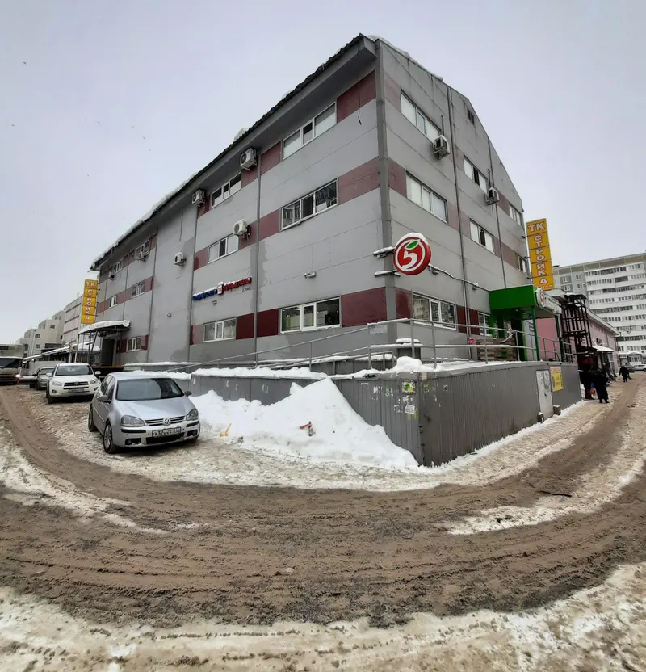
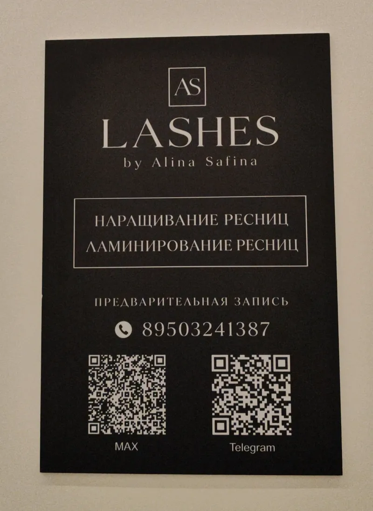

Lashesby Alina SafinaКабинет ресниц · Казань, Мусина 29д
Наращивание ресниц
Ламинирование ресниц
Предварительная запись
+7 950 324-13-87- 3 этаж, офис 315
- Наличные или перевод
- Наращивание, ламинирование, окрашивание
Услуги
Всё про ресницы, в одном кабинете
Три процедуры, которые делает Алина. Нажмите «Записаться», и процедура сразу встанет в запись внизу страницы.
Цены Алина пришлёт, и они встанут вместо заглушек [ЦЕНА].
Не знаете, что выбрать
Наращивание или ламинирование?
Отметьте, что про вас, и появится подсказка: какая процедура подойдёт, почему и как часто приходить.
Стоимость[ЦЕНА]
Это подсказка, а не приговор: точнее скажет Алина, когда посмотрит ваши ресницы.
Мастер
Алина
Принимает в своём кабинете на улице Мусина: наращивание, ламинирование и окрашивание ресниц. Приём только по предварительной записи.
- Наращивание
- Ламинирование
- Окрашивание
Кабинет новый, отзывов в 2ГИС пока нет. Здесь будут работы Алины и отзывы клиенток.
Запись
Выберите процедуру и время
Алина принимает по предварительной записи. Выберите процедуру, день и время, а после записи включите напоминание в Telegram.
Часы и занятость здесь придуманы для примера. На готовом сайте будет расписание Алины.
День
Время
Готово
Откроется бот студии: нажмите «Старт», и накануне придёт напоминание. Алина увидит ваш ник и сможет написать в Telegram. Здесь это демонстрация.
Напоминания включены. Накануне визита придёт сообщение в Telegram.
Как найти
Мусина, 29д, офис 315


Казань, улица Мусина, 29д
3 этаж, офис 315
- По предварительной записи
- Оплата наличными или переводом с карты
- +7 950 324-13-87
Вопросы
Коротко о главном
Где находится кабинет?
В Казани, на улице Мусина, 29д, 3 этаж, офис 315 (Ново-Савиновский район). Маршрут есть в 2ГИС и Яндекс Картах по кнопкам выше.
Какие процедуры делает Алина?
Наращивание ресниц, ламинирование ресниц и окрашивание ресниц.
Что выбрать: наращивание или ламинирование?
Наращивание даёт длину и объём, ламинирование работает со своими ресницами: изгиб и ухоженный вид. На странице есть подсказка в три клика, а точнее Алина скажет, когда посмотрит ваши ресницы.
Как часто нужна коррекция?
После наращивания коррекцию обычно делают раз в 2–3 недели, ламинирование обычно повторяют раз в месяц-полтора. Точный срок Алина подскажет после процедуры.
Как записаться?
Только по предварительной записи: напишите Алине в Telegram или MAX, либо позвоните по номеру +7 950 324-13-87. На готовом сайте будет запись онлайн с выбором дня и времени.
Как оплатить?
Наличными или переводом с карты.